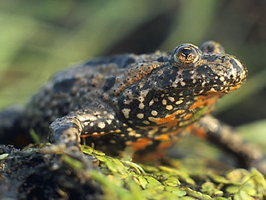

A frog is any member of a diverse and largely carnivorous group of short-bodied, tailless amphibians composing the order Anura (ανοὐρά, literally without tail in Ancient Greek). The oldest fossil "proto-frog" Triadobatrachus is known from the Early Triassic of Madagascar, but molecular clock dating suggests their split from other amphibians may extend further back to the Permian, 265 million years ago.
